UDN
Search public documentation:
MainEditorToolbarCH
English Translation
日本語訳
한국어
Interested in the Unreal Engine?
Visit the Unreal Technology site.
Looking for jobs and company info?
Check out the Epic games site.
Questions about support via UDN?
Contact the UDN Staff
日本語訳
한국어
Interested in the Unreal Engine?
Visit the Unreal Technology site.
Looking for jobs and company info?
Check out the Epic games site.
Questions about support via UDN?
Contact the UDN Staff
主要编辑器工具栏
概述
地图
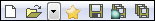
创建新关卡
打开现有的关卡文件
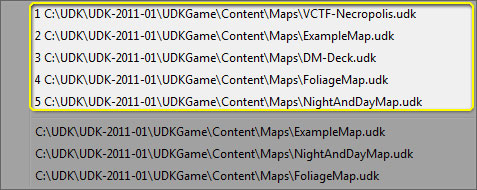
启用将地图文件作为最喜欢的地图

保存当前关卡
保存所有关卡
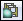
保存所有没有保存或者自上次保存后已经发生改变的关卡。只保存软件包中那些在磁盘上可以编写的关卡。不会提示从源码控制中迁出包。保存所有可编写软件包
取消/重复
取消上一个操作
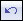
取消事务处理栈中的上一个操作。重复前一个没完成的操作
窗体控件
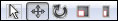
选择模式
使用事务窗体控件
使用旋转窗体控件
使用同一缩放窗体控件
使用非同一缩放窗体控件
参考坐标系统
搜索
查找 Actor
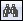
打开‘搜索 Actor’对话框，将允许用户在当前在关卡浏览器中可见的关卡中查找指定的 actor。浏览器
内容浏览器
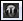
打开内容浏览器，用户可以在这里搜索资源。编辑器
Kismet 编辑器
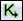
打开 Kismet 编辑器，用户可以在这里编辑器与当前关卡相关的 Kismet 序列。Matinee 编辑器
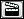
允许用户打开与当前关卡相关的任何 matinee 序列。视窗相机
到远剪裁平面的距离
选择
允许选择半透明物体
框选
杂项
启用全屏
启用实时音频
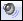
在透视图视窗中启用实时音频。右击调整音量。编译
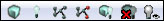
构建可视关卡的几何体
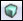
为在关卡浏览器中指定的‘当前关卡’构建几何体。构建光照

构建路径
构建掩体节点
构建全部
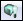
为所有可见关卡构建几何体、光照和掩体节点。构建全部并提交到源码控制
光照质量设置
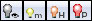
| 操作 | 描述 |
|---|---|
| 鼠标左键单击 | 在质量设置选项之间来回循环。 |
| 鼠标右键单击 | 直接设置光照构建的质量。 |
启动按钮
| 操作 | 描述 |
|---|---|
| 鼠标左键单击 | 在指定平台上启动。 |
| CTRL + 鼠标左键单击 | 启动为观看模式。 |
| 鼠标右键单击 | 编辑启动 URL。 |